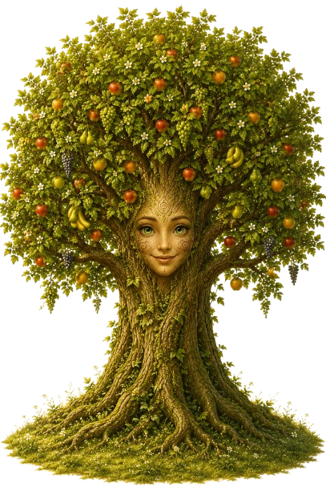
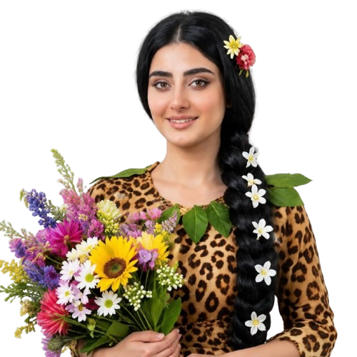

سفری هفتگی به دنیای داستان، خیال و فرهنگ ایرانی.
میزبان کودکانی که دور از ایران بزرگ میشوند؛ تا با شاهنامه، اسطورههای ایران و همچنین با اساطیر مشابه غیرایرانی آشنا شوند.
کودک هفتهبههفته با یک داستان همراه میشود؛ میشنود، بازی میکند، میآفریند و در پایان دوره با «فردوسی» گفتوگو میکند.
هر هفته یک داستان صوتی تعاملی، متناسب با سن و روحیهی کودک، پخش میشود.
کودک در جریان داستان، در بازیها و فعالیتهای تعاملی مشارکت میکند و به قهرمان ماجرا تبدیل میشود.
بعد از هر داستان، یک فعالیت خلاقانه انجام میدهد تا آموختهها در ذهنش بماند.
در پایان هر دوره، «آقای فردوسی» به پرسشها و کنجکاویهای کودک پاسخ میدهد.
شاهنومه فقط برای داستانگویی نیست؛ راهی امن و شاد برای پیوند کودک با ریشههای ایرانیاش است.
انتخاب داستانها بر اساس سن و روانشناسی کودک.
بدون نیاز به هیچ پیشزمینهای، از ابتدا آشنا میشود.
ماموریتهای خلاقانه و بازی پس از هر داستان برای تثبیت محتوا در ذهن کودک و احساس تعلق به دنیای پهلوانی.
پاسخ به پرسشهای کودک در پایان دوره.
هماهنگ با زمانبندی خانواده، هر زمان که مناسب باشد.
در این ماجراجویی، با شخصیتهای بسیاری همراه میشویم؛ برخی از آنها را در کارتهای زیر معرفی کردهایم.
نگهبان داستانهای کهن

نگهبان داستان و راهنمای کودک در شهر جادویی شاهنومه
نخستین شاه شاهنامه و بنیانگذار شهر جادویی شاهنومه

ملکهی شهر شاهنومه
همراهان بیشتری معرفی خواهند شد...
برای ثبتنام در دورههای گروهی و پرسشها، از راههای زیر با ما در ارتباط باشید.
اطلاعات ثبتنام در تلگرام و اطلاعرسانیها در اینستاگرام منتشر میشود.
جهت بهرهمندی از تخفیف چندنفره، حتماً پیش از ثبتنام با مسئول برگزاری هماهنگ کنید.